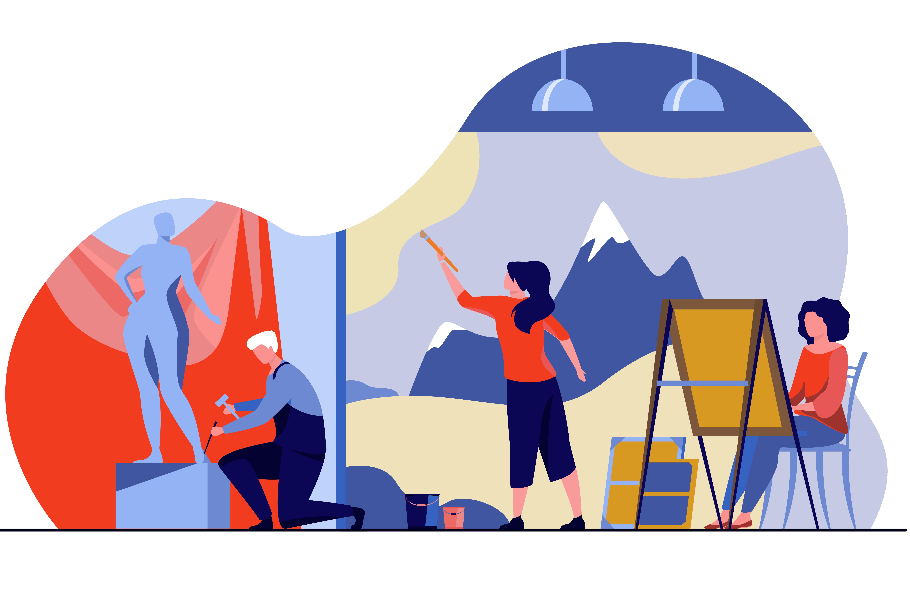
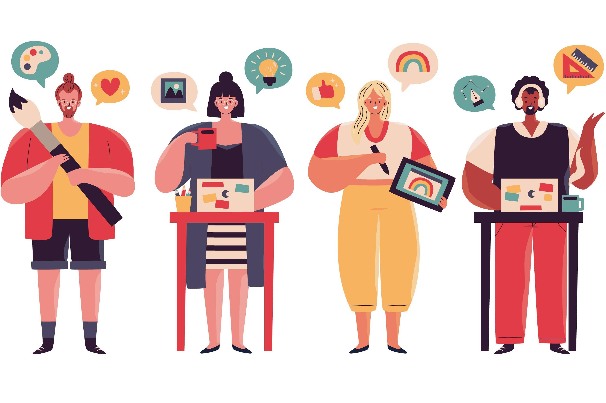
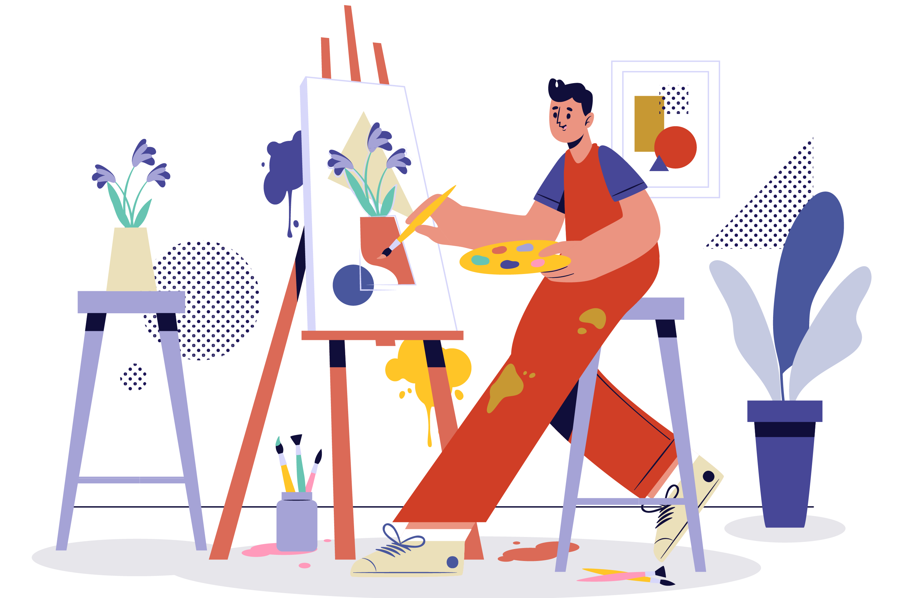
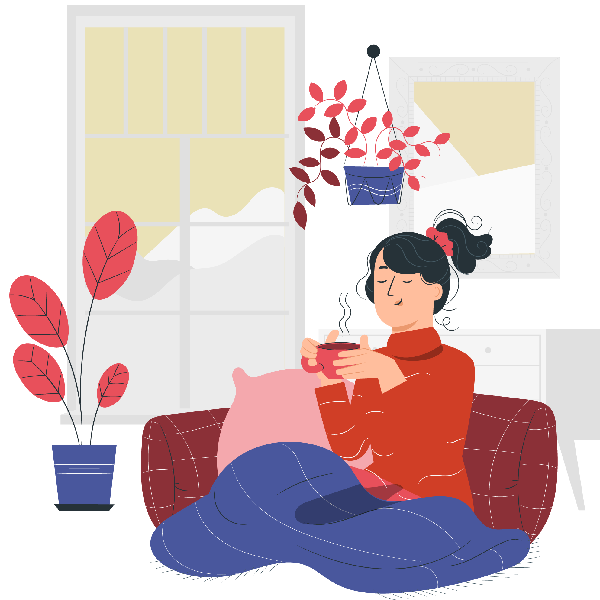
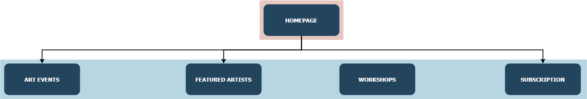
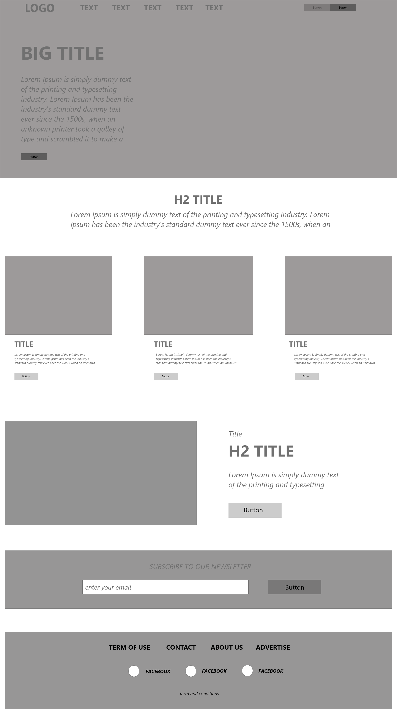
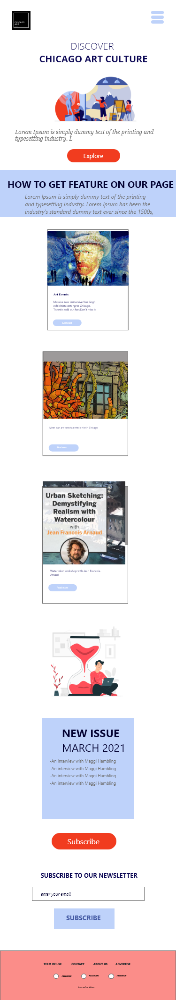

What resources were used when creating your work?
1/Fonts
[1]Open Sans- from Google Font [Online]-[Accessed: 01-Jan-2021]
Open Sans2/Libraries
[2] Handlebars. js- 'Handlebars Reference', 2016. [Online]. Available]-[Accessed: 14-Jan- 2021]
Handlebars[3] JQuery AP- “JQuery API”- [Online]- [Accessed: 14-Jan- 2021]
jQuery3/ Reference codes/ template
[4]Bootstrap- “Bootstrap template- checkout example.” [Online]-[Accessed: 14- Jan- 2021]
Bootstrap Checkout example[5] W3schools- “Create a clickable dropdown menu” [Online]. Available- [Accessed: 02- Feb- 2021]
Dropdown menu Reference[6] W3schools- “How to create Slideshow.” [Online]. Available- [Accessed” 24- Feb- 2021]
Carousel Images Reference[7] Shivasurya S- “Animating numbers.” [Source code]. Available- [Accessed: 11-Feb-2021]
Animating numbers4/ Images and Content
Hero Hompage Hero Art Events

Featured Artists 
Workshops 
Subscription 
Appendices
Site map
Wire frames

Mockup- WEB VERSION

Mockup- Mobile version
